ALFRED: Requirement-driven development of an open-source mobile manipulator for long-term plant monitoring
1The University of Edinburgh, UK
2Heriot-Watt University, UK
3Harper Adams University, UK
*Corresponding authors
†Informatics Makerspace, School of Informatics, The University of Edinburgh
arXiv preprint, 1 October 2026 · arXiv:2610.01477 [cs.RO] ·
doi:10.48550/arXiv.2610.01477
Overview
Four builds against six requirements
ALFRED is an open-source mobile manipulator built from commercially available components for repeated close-range sensing of crops and forests: a six-degree-of-freedom arm, LiDAR, RGB-D cameras, RTK GNSS and an IMU on an Ackermann-steered base, mounted on a reconfigurable aluminium strut frame. Each of its four builds was motivated by a requirement its predecessor failed to meet: durability, modularity, repairability, sensing reach, endurance and reproducibility.
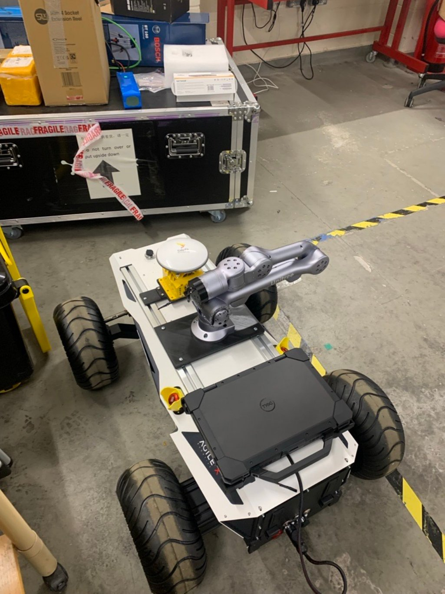
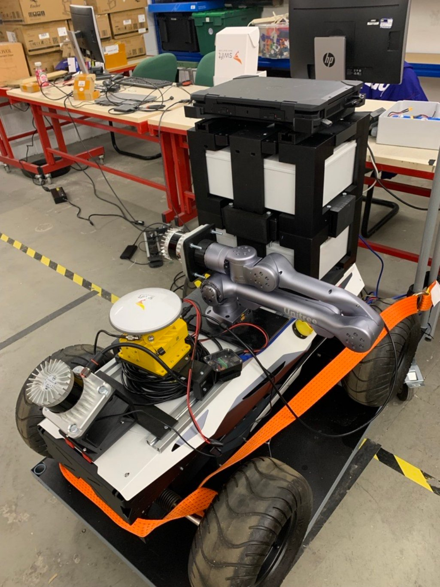
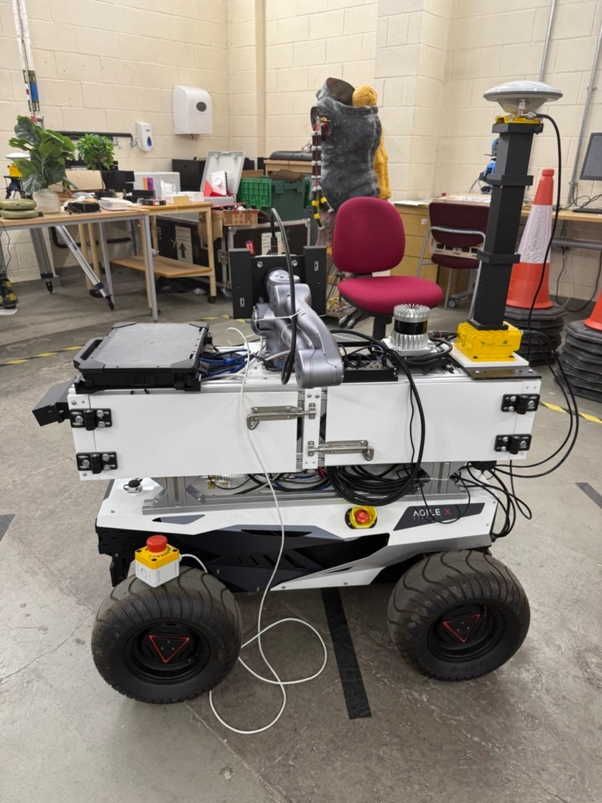
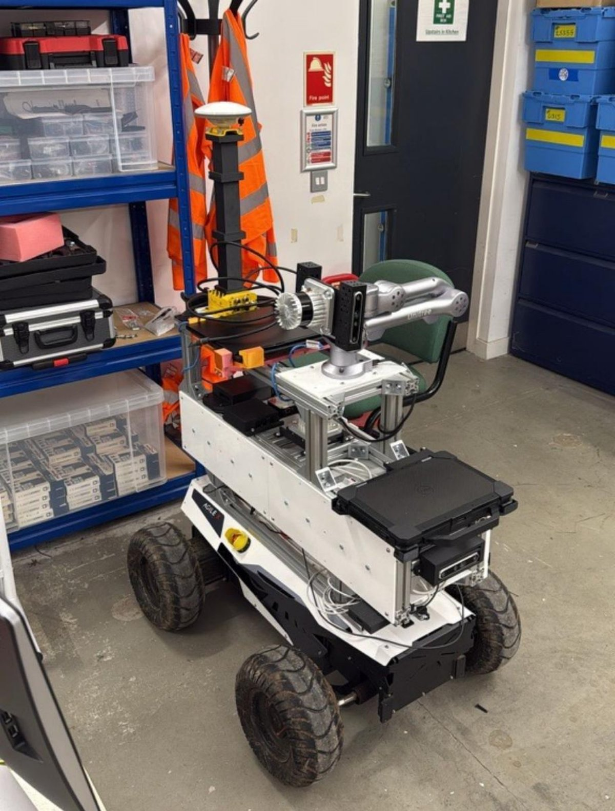
The six requirements
- R1 · Outdoor durability
- Operate unsheltered across a full annual cycle: unforecast rain or gusts mid-session, mud, dust, pollen and humidity, and ground with fallen leaves, loose stones and exposed roots.
- R2 · Modularity and reconfigurability
- Sensors, computers and other mounted hardware relocatable and replaceable without redesign, so the platform can change with the sensing task and be shared with other researchers.
- R3 · Repairability
- Failures fixed in-house between scheduled deployments, from commercially available parts or parts made with workshop equipment.
- R4 · Sensing reach and coverage
- Place sensors at poses a rigidly mounted sensor cannot reach, and keep enough base-mounted field of view for each task.
- R5 · Endurance
- Complete a scheduled collection session without being limited by battery capacity.
- R6 · Reproducibility by others
- Rebuildable by a third party: design files for every bespoke part, priced commercial components, and software that ports between machines.
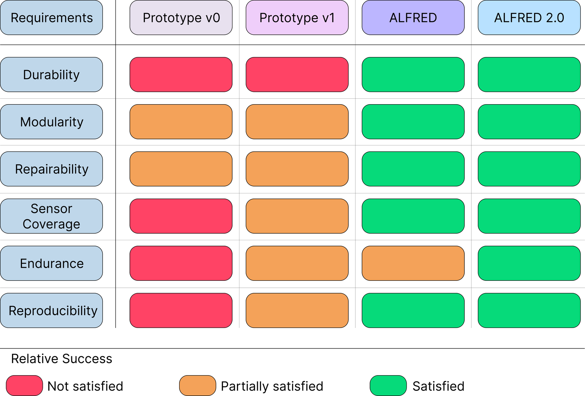
Sensing reach and coverage
Reach and visibility compared on the robot descriptions
Each complete build was assessed on its robot description, so a design change can be quantified before anything is manufactured: usable arm workspace from inverse kinematics at 3,110,400 end-effector poses under each build's own collision model, and LiDAR visibility from rays cast to a 5 m cap, first with the arm at zero and in the drive posture and then across every usable arm pose.
Usable manipulator workspace
| Build | Collision pairs | Reachable | Collision | Clearance | Usable | Usable [%] |
|---|---|---|---|---|---|---|
| Prototype 1 | 128 | 25,096 | 12,751 | 3,821 | 8,524 | 34.0 |
| ALFRED | 102 | 24,950 | 4,398 | 5,578 | 14,974 | 60.0 |
| ALFRED 2.0 | 84 | 24,950 | 3,310 | 5,146 | 16,494 | 66.1 |
Of 3,110,400 target poses per build; percentages are of reachable poses.
Frame-mounted LiDAR visibility
Across every usable arm pose
The sweep above holds the arm in two postures. The ray casts were then repeated at every usable arm pose from the workspace table, so that each cell can report how often a ray is free rather than whether it is free in one posture, and so that the arm's own share of the obstruction can be separated from the platform's.
The same ray traces also separate the arm's share of the obstruction from the platform's. A ray counts as blocked by the arm when the complete robot stops it but the robot with the whole arm removed does not; the arm here is everything from its base link outwards, mounts, the arm-mounted LiDAR and, on the ALFRED builds, the RGB-D cameras included.
| Build | Poses with extra arm blockage | Scan blocked by the arm, mean ± SD | Arm's share of all robot-blocked rays |
|---|---|---|---|
| Prototype 1 | 100 % · 8,524 of 8,524 | 2.68 ± 1.95 % | 33.43 % |
| ALFRED | 100 % · 14,974 of 14,974 | 3.29 ± 1.40 % | 24.61 % |
| ALFRED 2.0 | 16.82 % · 2,774 of 16,494 | 0.12 ± 0.42 % | 0.40 % |
Averages are over all usable poses and all 32,768 rays of a scan, not over the area of the polar plots in the sweep above. Over only the poses it affects, the arm on ALFRED 2.0 blocks 0.69 % of the scan; that build's much larger total obstruction comes principally from the fixed body, which blocks 29.25 % of scan rays. The measure is additional visibility loss: where the arm and the body would both stop a ray, it does not say which is hit first.
At a glance
Met in service, and measured on the model
In service
Usable arm workspace, as a share of reachable poses
Frame-mounted LiDAR, horizontal beam
Platform
The platform
One strut frame, two configurations
Both builds share an AgileX Hunter 2.0 base, a Unitree Z1 arm, two Ouster OS1-32 LiDARs, three RealSense D457 RGB-D cameras, an IMU and RTK GNSS, powered from two enclosures with their own 48 V 30 Ah batteries and run from ROS 1 Noetic in Docker containers.
ALFRED: ForestYear3D configuration
ALFRED records both LiDARs and the IMU. The arm sweeps between fixed joint configurations while an operator steers the base along the forest corridor.
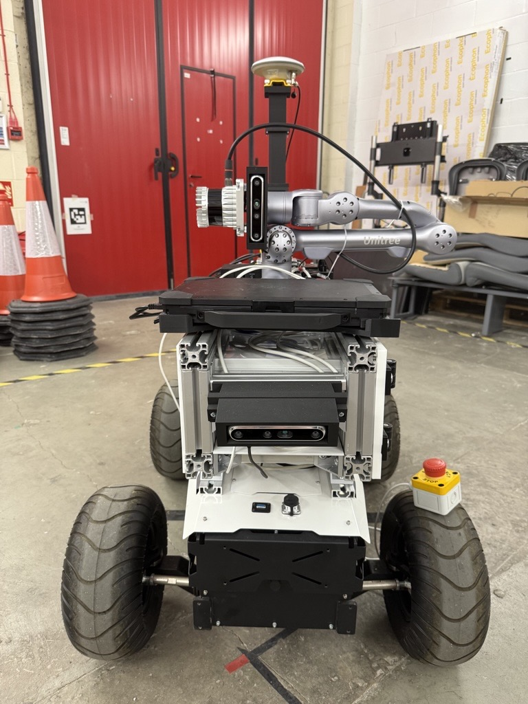
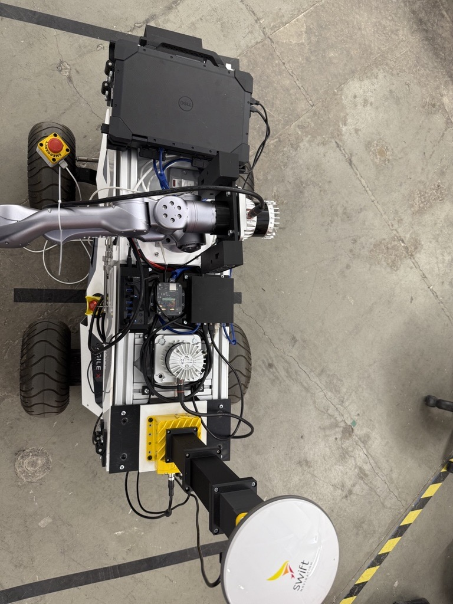
ALFRED 2.0: ROWCAST configuration
ALFRED 2.0 adds a second frame layer, a second laptop and a Wi-Fi router for RTK corrections and remote operation, drops the arm-mounted LiDAR, and drives a pre-validated route autonomously.
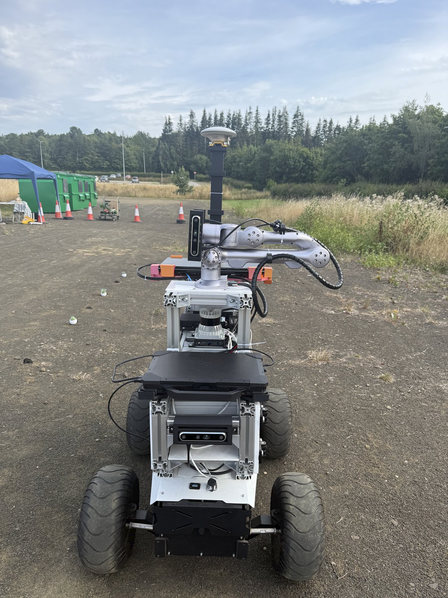
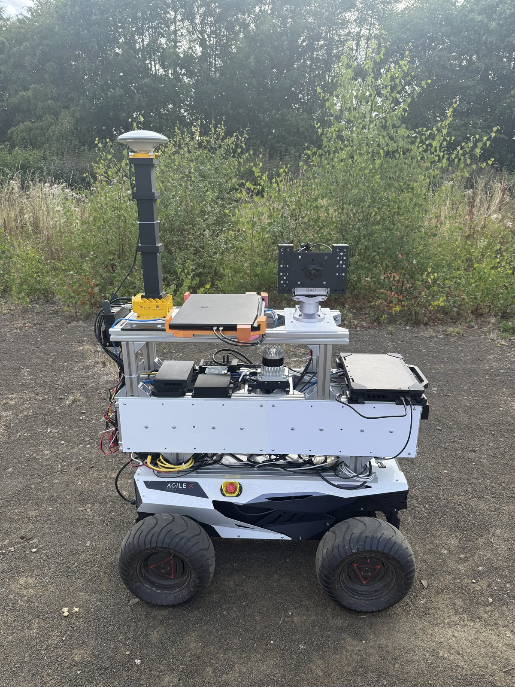
Why the network had to grow
Autonomous crop-row operation needs more computing than one rugged laptop can carry. The Dell laptop had no free ports for the two arm-mounted cameras, so an MSI laptop with an RTX 3070 Ti was added to run them, keep planning off the control loop and make onboard segmentation possible. The Dell stays ROS master because it holds the safety-critical interfaces to the base and arm, and an eight-port switch links the two.
A Wi-Fi router does two jobs at no extra hardware cost. A standalone GNSS fix is only accurate to metres, coarse against the scale of a crop row, so the router carries RTK corrections from the base station to the rover for centimetre positioning. It also makes the onboard computers reachable from an Alienware operator laptop at the field edge, so a session can be started, monitored and visualised without touching the robot. With three computers on wired and wireless links, every interface has a fixed address.
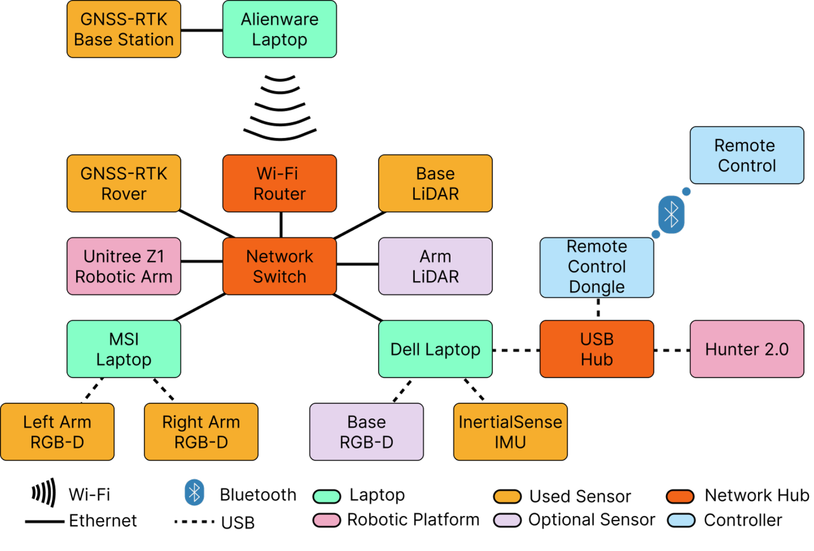
Durability · Modularity · Repairability
Modularity through a strut frame
Prototype 1's printed PLA cage broke during assembly, so ALFRED's frame is aluminium profile strut and laser-cut acrylic: stock parts, cut to length and bolted, repaired or rearranged in minutes rather than reprinted. The frame was reshaped repeatedly through the ForestYear3D year without a missed collection: reconfigured for a concurrent payload study, with a weight cage in place of the manipulator and a different GNSS receiver on the mast, and switched back and forth between the ALFRED and ALFRED 2.0 layouts, about six hours a switch.
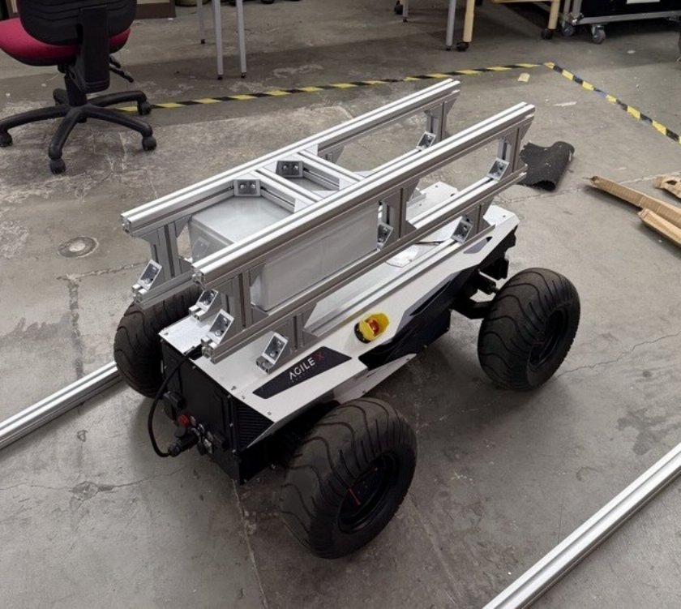
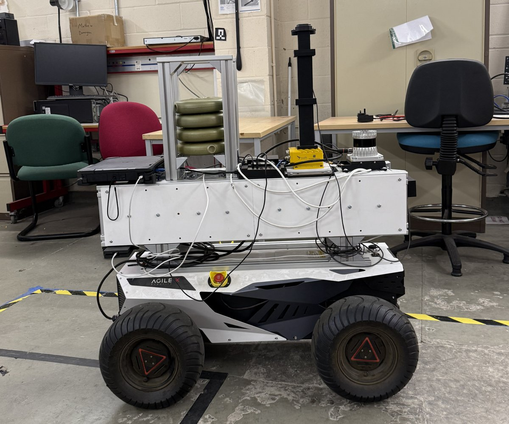
Citation
@misc{johnson2026alfred,
title = {{ALFRED}: Requirement-driven development of an open-source
mobile manipulator for long-term plant monitoring},
author = {Johnson, Ciar{\'a}n Miceal and Quail, Christopher and
Ellard, Garry and McConnell, Alistair and
Tonneau, Steve and Auat Cheein, Fernando},
year = {2026},
eprint = {2610.01477},
archivePrefix = {arXiv},
primaryClass = {cs.RO},
doi = {10.48550/arXiv.2610.01477},
url = {https://arxiv.org/abs/2610.01477}
}